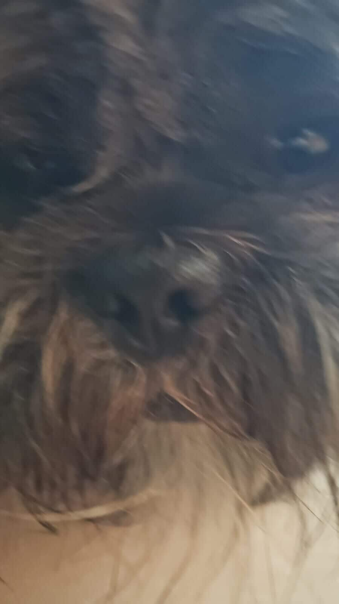

En este proyecto, que decidimos hacer en formato de podcast mientras jugamos un juego que nos gusta, compartimos nuestras metas personales y profesionales, nuestra area de especialización o campo de interes, y cual seran nuestras estrategias para alcanzar nuestras metas.